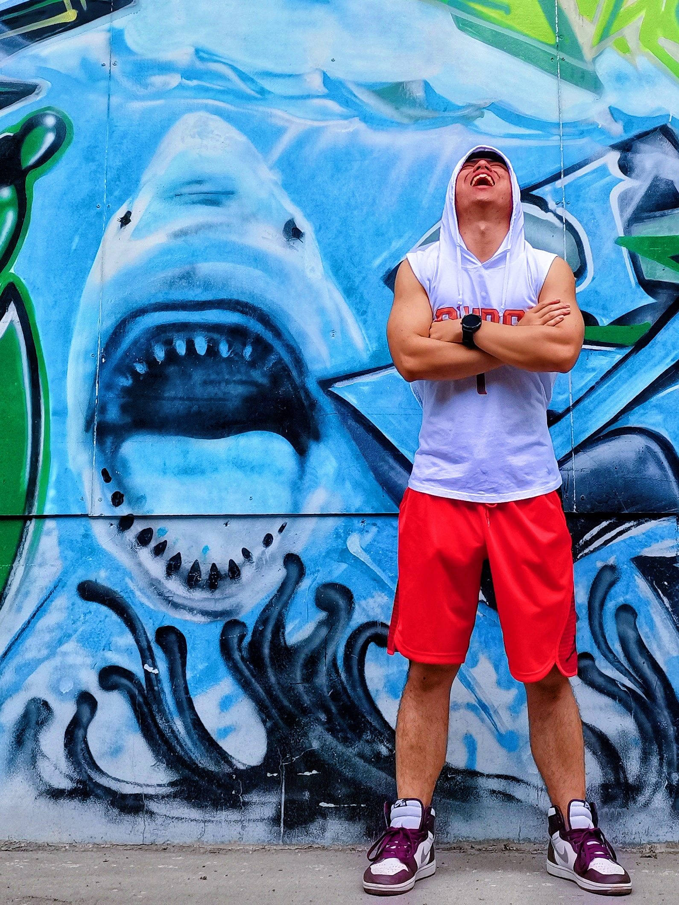

A 50%-50% hustle and chill average joe dreaming of hitting the jackpot one day...

[02/2025] One paper about enhancing detectors with LLMs has been accepted to CVPR'25 🎉🎉🎉
I am Junkai Yan, or you can call me Drinky. I graduated with a master's degree from the School of Computer Science and Engineering at Sun Yat-sen University in June 2024, under the supervision of Professor Wei-Shi Zheng. Before graduation, I worked as a research intern at Alibaba TongYi Lab and subsequently joined a startup team initiated by my colleague from Alibaba Cloud. Unfortunately, I realized that entrepreneurship was not for me and decided to quit before long...
Afterwards, I joined Insta360, a vibrant intelligent imaging company, as an algorithm engineer. Currently, I mainly focus on AI video editing technology. It's incredibly interesting to use our products for filming and apply the algorithms we've developed for editing. I thoroughly enjoy my current work and life!
🕒 2017.09 - 2024.06
📍 Sun Yat-sen University
🎓 Bachelor & Master of Computer Science
🔍 Multi-modal Learning, Self-supervised Learning, Object Detection, Person Re-indentification...
I bought an Insta360 Ace Pro 2📷 and tricked it out to be "my first Leica-style camera as a youngster." I aaaaaabsolutely love using it to shoot videos when I go outting with my cute blue electric bicycle🛵 on weekends. And if you're looking to buy an action camera, I will say Ace Pro 2 is your top choice. I'm into basketball🏀 and a hhhhhhuge fan of Devin Booker📖, so I've got all sorts of colorful Booker One basketball shoes👟. PPPPPPlus, I'm a diehard McDonald' fan - I love burgers🍔, and I will never let my McDonald's O'McCard expire. Lastly, concat me via drinkyyan@gmail.com if you want to contact me🤣.
For more information, please refer to my Google Scholar.
S. Fu, Q. Yang, Q. Mo, J. Yan, X. Wei, J. Meng, X. Xie, W-S. Zheng. LLMDet: Learning Strong Open-Vocabulary Object Detectors under the Supervision of Large Language Models. In CVPR 2025. [ArXiv][Code]
S. Fu, J. Yan, Q. Yang, X. Wei, X. Xie, W-S. Zheng. Frozen-DETR: Enhancing DETR with Image Understanding from Frozen Foundation Models. In NeurIPS 2024. [ArXiv][Paper][Code]
H. Tian*, J. Meng*, W-S. Zheng, Y-M. Li, J. Yan, Y. Zhang. Loc4Plan: Locating Before Planning for Outdoor Vision and Language Navigation. In ACM-MM 2024 (Oral & Best Paper Nomination). [ArXiv][Paper]
J. Yan*, Y. Gao*, Q. Yang, X. Wei, X. Xie, A. Wu, W-S. Zheng. DreamView: Injecting View-specific Text Guidance into Text-to-3D Generation. In ECCV 2024. [ArXiv][Paper][Code]
Q. Mo, Y. Gao, S. Fu, J. Yan, A. Wu, W-S. Zheng. Bridge Past and Future: Overcoming Information Asymmetry in Incremental Object Detection. In ECCV 2024. [ArXiv][Paper][Code]
X. Li*, J. Yan*, J. Jiang, W-S. Zheng. PTMA: Pre-trained Model Adaptation for Transfer Learning. In KSEM 2024. [Paper]
W-S. Zheng*, J. Yan*, Y-X. Peng. A Versatile Framework for Multi-scene Person Re-identification. IEEE TPAMI, 2024. [ArXiv][Paper][Code]
S. Fu, J. Yan, Y. Gao, X. Xie, W-S. Zheng. ASAG: Building Strong One-Decoder-Layer Sparse Detectors via Adaptive Sparse Anchor Generation. In ICCV 2023. [ArXiv][Paper][Code]
J. Yan, L. Yang, Y. Gao, W-S. Zheng. Self-supervised Cross-stage Regional Contrastive Learning for Object Detection. In ICME 2023 (Oral). [Paper][Code]
Y. Gao, K-Y. Lin, J. Yan, Y. Wang, W-S. Zheng. AsyFOD: An Asymmetric Adaptation Paradigm for Few-Shot Domain Adaptive Object Detection. In CVPR 2023. [Paper][Code]
D. Song, Y. Gao, J. Yan, W. Sun, W-S. Zheng. Space-correlated Contrastive Representation Learning with Multiple Instances. In ICPR 2022 (Best Industrial Research Paper Award Candidate). [Paper][Code]
2024 Community Basketball Game Champion & Three-Pointer King
ICPR' 22 Best Industrial Research Paper Award Candidate
2021 SYSU-CSE Basketball Game Champion


{kind=link}
{kind=link}
{kind=link}
{kind=link}
{kind=link}
{kind=link}
{kind=link}